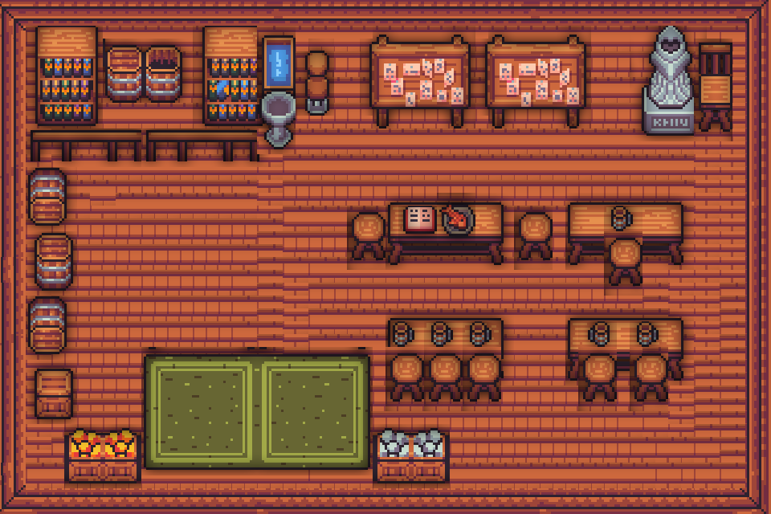
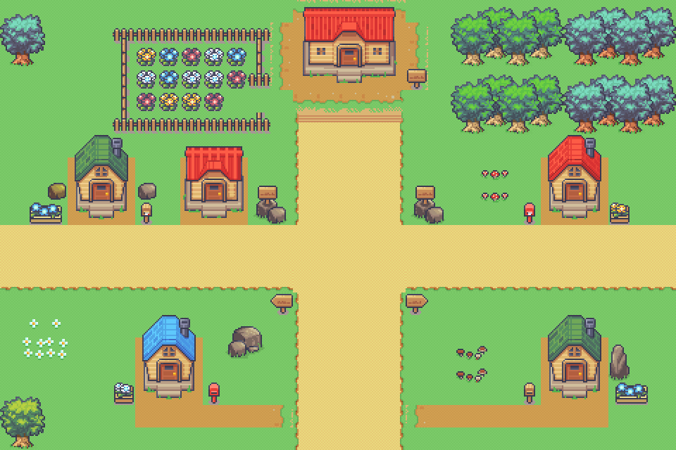
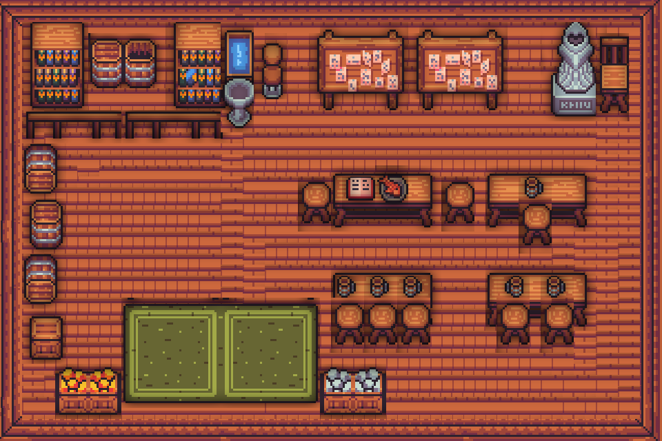
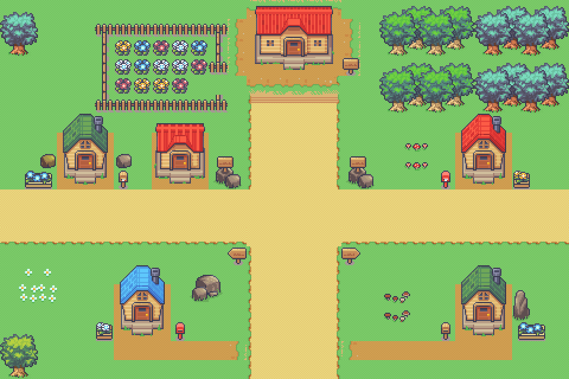
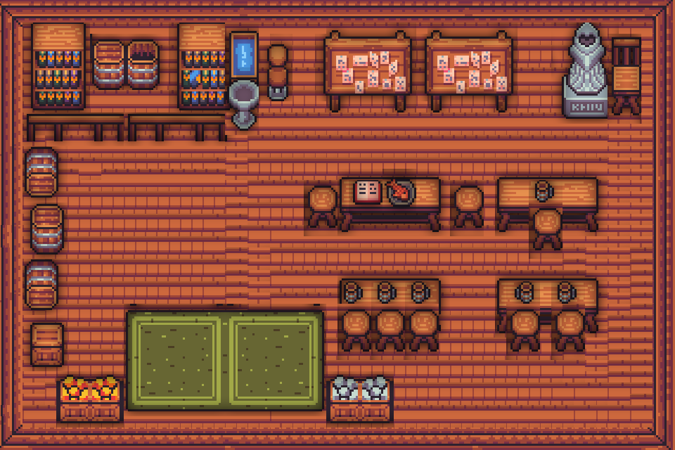
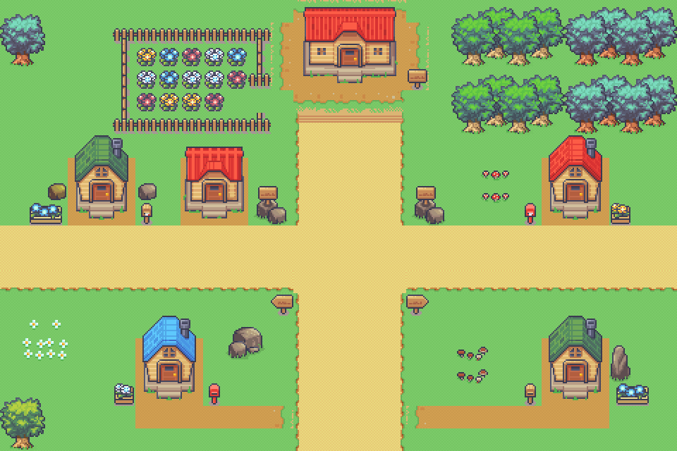

Crusade of the abyss
Venez découvrir ce fabuleux monde rempli de mystères à découvrir! Explorez les donjons, combattez les monstres, et cherchez les trésors cachés dans une aventure exaltante!
Une aventure époustouflante!
3 classes à jouer
Choisissez entre 3 différentes classes possédant chacune leur propre manière de jouer
et leurs propres atouts!
LE GUERRIER : Un combattant au corps-à-corps exemplaire, sachant manier sa lame
tranchante comme personne
L’ARCHER: Agile, rapide mais néanmoins batailleur, il est capable de percer
les ennemis avec ses flèches à plus d’une dizaine de mètres
LE MAGE: Guerrier avisé et sage, il maîtrise la magie et sait en tirer profit
pour se débarasser des ennemis qui se mettent en travers de son chemin
Une infinité de donjons à explorer
Grâce à la génération procédurale, chaque aventure vous paraîtra totalement
différente de la précédente! Explorez jusqu’à 5 biômes différents de
donjons possédant chacun leur spécificités.
Des dizaines d’ennemis à combattre
Une multitude d’ennemis vous attends dans les donjons profonds. Des minces
gobelins jusqu’aux énormes orcs, ils sont de toutes les formes et de
toutes les couleurs mais une chose les rassemble: leur soif de sang!
Des personnages attachants
Il n’y a pas que le danger qui vous attends, mais aussi des rencontres!
Parcourez le village, visitez la taverne, et peut-être trouverez-vous des
amis qui pourraient vous aider dans votre aventure
Cyrian Savary - Lead project Étienne Bertrand - Programmeur
Karma Grandpaul - Lead tech Arthur Chassaing - Programmeur
Théo Boros - Lead gameplay Alexandre Gouveia - Programmeur


agrandpaul@gaming.tech
csavary@gaming.tech
tboros@gaming.tech
ebertrand@gaming.tech
achassaing@gaming.tech
agouveia@gaming.tech